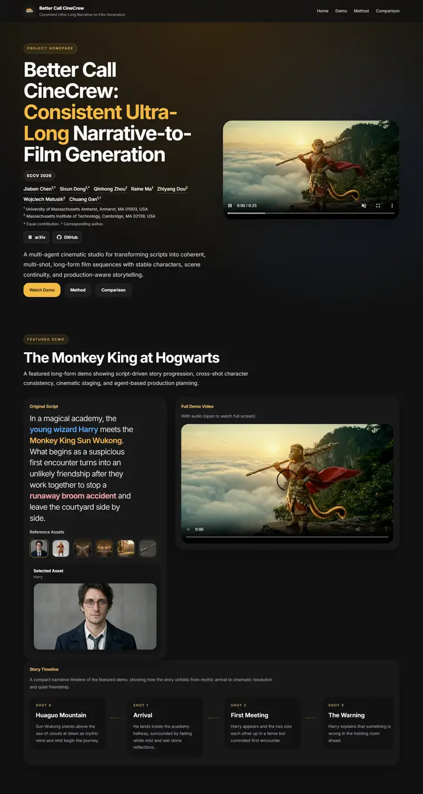

Better Call CineCrew: Consistent Ultra-Long Narrative-to-Film Generation
A studio screening room after hours: charcoal walls, an amber spotlight leaking from the ceiling, and every important word lit in marquee gold.

Checked against the rendered page. No footer and no BibTeX on the page. Case buttons and asset thumbnails render in Arial because form controls do not inherit Inter.
Why it is here
Dark theme with amber highlights, a video hero, a script-to-asset demo panel and a shot timeline. A product-like presentation of generative video.
Overview
Color Palette
Typography
Inter
Better Call CineCrew: Consistent Ultra-Long Narrative-to-Film Generati
Abstract · Method · Results · BibTeX — 0123456789
Arial
Better Call CineCrew: Consistent Ultra-Long Narrative-to-Film Generati
Abstract · Method · Results · BibTeX — 0123456789
Spacing & Shape
Page Modules
Guidelines
More like this

CRAFT: Training-Free Cascaded Retrieval for Tabular QA
A tidy product manual in pale blueprint blue, where every stage wears its own colored edge.

Efficient Self-Evaluation for Diffusion Language Models via Sequence Regeneration
A tidy stack of rounded cards washed in a blue-violet-apricot dawn, signed with a gradient wordmark.

FIGMA: Towards FIne-Grained Music retrievAl
A music journal on warm paper: a heavy Newsreader headline under a red kicker, big red serif numerals for the results, and figures resting in soft cream frames.

GuideDog: A Real-World Egocentric Multimodal Dataset for Blind and Low-Vision Accessibility-Aware Guidance
A quiet monograph page: one serif column, oxblood ink for the links, and a table that blushes only at its own row.

LaMI: Augmenting Large Language Models via Late Multi-Image Fusion
A careful conference handout: Noto Serif headings, navy outlined buttons and soft grey bands taking turns.

PairCoder++: Pair Programming as a Universal Paradigm for Verified Code-Driven Multimodal and Structured-Artifact Generation
A crisp white product page: a blue announcement strip, ink-black pill buttons and every figure on a soft-shadowed card.